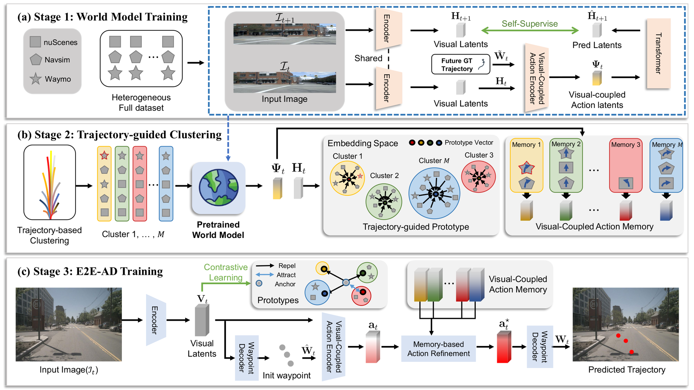
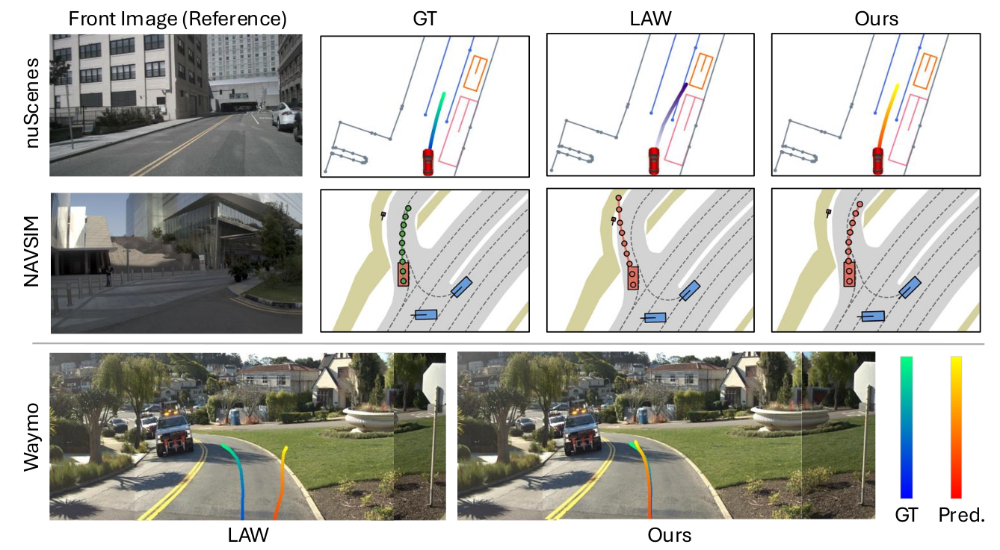
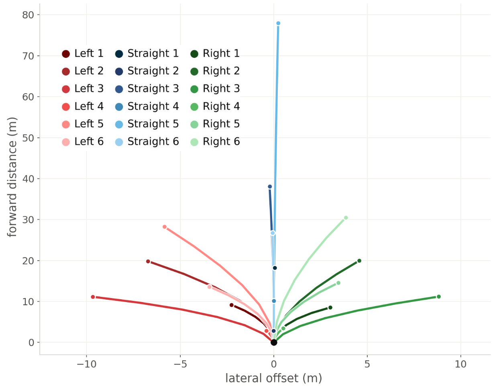
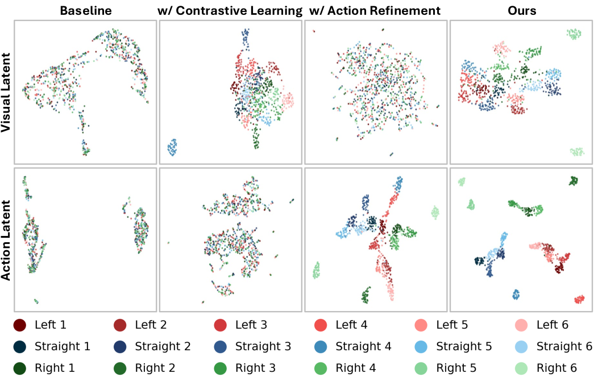
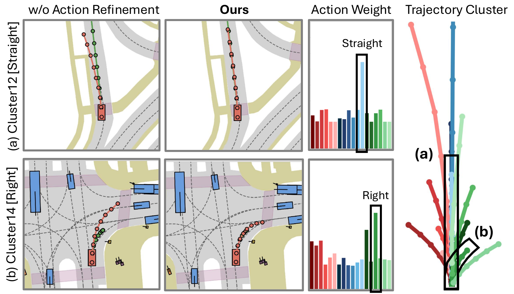

Abstract
End-to-end autonomous driving has emerged as a compelling alternative to traditional modular pipelines by directly mapping raw sensor data to driving actions. While recent approaches achieve strong performance on single-domain datasets, their performance degrades significantly when trained jointly across multiple heterogeneous domains. In practice, however, autonomous systems must operate across diverse environments with heterogeneous distributions, including different cities, sensor configurations, and traffic patterns, without domain-specific retraining. This gap highlights a key challenge in multi-domain learning: domain-specific variations across heterogeneous domains introduce conflicting learning signals, driving models toward compromised solutions that are suboptimal across domains.
To address this, we propose a trajectory-driven learning paradigm that organizes training around planning trajectories, enabling the model to capture domain-invariant representations of driving intent. Furthermore, we incorporate a world model that predicts future latent features conditioned on ego actions, improving feature consistency and mitigating domain-induced biases. We evaluate our approach on three benchmarks, nuScenes, NAVSIM, and the Waymo end-to-end dataset, and show substantial improvements over existing methods across all domains. Our results demonstrate that a single unified model can be trained on heterogeneous datasets while maintaining strong performance within each domain, highlighting a step toward scalable real-world deployment.
Contributions
- Trajectory-driven representation learning. We propose a learning paradigm that organizes training around planning trajectories. By clustering data based on behavioral similarity and constructing prototypes and an action memory, our framework encourages representations that capture driving behavior beyond domain-specific appearances.
- Heterogeneous-domain benchmark with superior performance. We establish a standardized benchmark setting for end-to-end autonomous driving under heterogeneous domains, enabling fair and reproducible evaluation across diverse datasets. Under this benchmark, our framework achieves strong multi-domain generalization and robustness, substantially surpassing other methods and setting a solid reference point for future research.
The HEAT Framework

Overview of HEAT. HEAT is trained in three stages. (a) Stage 1 — World model training. A latent world model is pretrained on the union of all domains. It concatenates each visual latent token with the flattened future ground-truth trajectory to form visual-coupled action latents, and predicts the next frame's visual latents self-supervised. Conditioning on trajectories, rather than only forecasting pixels, tightly couples perception with control.
(b) Stage 2 — Trajectory-guided behavior clustering. Samples from all domains are clustered by their ground-truth waypoints with K-Means into M behavior clusters. Each cluster is summarized into a token-level trajectory-guided visual prototype and a visual-coupled action memory. Visually different scenes that demand the same maneuver end up in the same cluster, so these priors carry behavior rather than appearance.
(c) Stage 3 — E2E-AD training. A perception-free driving model is trained from scratch using those priors: a contrastive objective aligns its visual latents with the trajectory-guided prototypes (CLTP), and episodic memory-based action refinement (EMAR) retrieves action features to refine the predicted waypoints. The world model itself is discarded, so inference costs nothing extra.
Results
All models below are trained jointly on nuScenes + NAVSIM + Waymo and evaluated on each domain with a single shared checkpoint.
Open-loop planning under heterogeneous training
| Method | nuScenes | NAVSIM | Waymo | Avg. of L2 Avg. ↓ |
|
|---|---|---|---|---|---|
| L2 Avg. (m) ↓ | Col. Avg. (%) ↓ | L2 Avg. (m) ↓ | L2 Avg. (m) ↓ | ||
| LTF | 2.96 | 1.10 | 2.06 | 3.78 | 2.93 |
| BEVPlanner | 2.88 | 5.16 | 3.57 | 3.50 | 3.32 |
| BEVPlanner++ | 0.38 | 0.44 | 0.38 | 0.58 | 0.45 |
| LAW | 0.83 | 0.48 | 1.21 | 2.46 | 1.50 |
| HEAT (Ours) | 0.35 | 0.17 | 0.22 | 0.68 | 0.42 |
L2 and collision rates are averaged over the 1s, 2s and 3s horizons. HEAT gives the best average L2 across all three domains at once, and cuts NAVSIM L2 by 42% relative to the strongest baseline.
Closed-loop planning on NAVSIM
| Method | Train data | NC ↑ | DAC ↑ | EP ↑ | TTC ↑ | Comf. ↑ | PDMS ↑ |
|---|---|---|---|---|---|---|---|
| Human | – | 100 | 100 | 87.5 | 100 | 99.9 | 94.8 |
| LAW | NAVSIM only | 96.4 | 95.4 | 81.7 | 88.7 | 99.9 | 84.6 |
| LTF | S + N + W | 92.4 | 83.8 | 36.4 | 87.6 | 81.3 | 55.6 |
| BEVPlanner++ | S + N + W | 94.4 | 80.1 | 66.2 | 86.7 | 100.0 | 69.6 |
| LAW | S + N + W | 93.7 | 83.9 | 69.7 | 86.4 | 98.4 | 72.3 |
| HEAT (Ours) | S + N + W | 97.7 | 93.9 | 80.2 | 93.0 | 100.0 | 85.2 |
NC: no at-fault collision. DAC: drivable area compliance. EP: ego progress. TTC: time-to-collision. PDMS: predictive driver model score. Baselines lose 12–29 PDMS when moved from single-domain to heterogeneous training; HEAT trained on all three domains still exceeds LAW trained on NAVSIM alone.
Ablation
| CLTP | EMAR | NAVSIM PDMS ↑ | nuScenes L2 Avg. ↓ | nuScenes Col. Avg. ↓ | Waymo L2 Avg. ↓ |
|---|---|---|---|---|---|
| ✗ | ✗ | 71.4 | 0.90 | 0.55 | 2.48 |
| ✓ | ✗ | 78.0 | 0.79 | 0.44 | 2.18 |
| ✗ | ✓ | 82.8 | 0.42 | 0.53 | 0.70 |
| ✓ | ✓ | 85.2 | 0.35 | 0.17 | 0.68 |
CLTP: Contrastive Learning with Trajectory-guided Prototype. EMAR: Episodic Memory-based Action Refinement. Each component helps on its own, and the two are complementary.
Setup. Swin-Transformer-Tiny backbone, 640×384 input, AdamW with cosine annealing from 5e-5, batch size 8, 18 epochs on 8×RTX 3090. Waypoints are sampled at 2 Hz over a 4-second horizon and the number of behavior clusters is M = 18.
Analysis

Qualitative planning results from a single heterogeneously trained checkpoint. Across nuScenes, NAVSIM and Waymo, HEAT's predicted trajectory tracks the ground truth more closely than LAW.

Trajectory-guided behavior clusters. K-Means over ground-truth waypoints yields interpretable maneuver groups (left / straight / right at varying curvature) that are shared across all three domains.

UMAP of visual latents (top) and action latents (bottom), colored by behavior cluster. The baseline mixes behaviors together; adding contrastive prototype alignment and action refinement progressively separates them, so the learned space is organized by driving intent rather than by domain.

Episodic memory-based action refinement. The retrieval weights concentrate on the memory slot matching the maneuver actually required (Straight for (a), Right for (b)), and the refined trajectory lands closer to the ground truth than without refinement.
BibTeX
@misc{cho2026heat,
title={HEAT: Heterogeneous End-to-End Autonomous Driving via Trajectory-Guided World Models},
author={Hoonhee Cho and Giwon Lee and Jae-Young Kang and Hyemin Yang and Heejun Park and Kuk-Jin Yoon},
year={2026},
eprint={2605.19631},
archivePrefix={arXiv},
primaryClass={cs.CV},
url={https://arxiv.org/abs/2605.19631}
}Our Related Work
VIPS: Vehicle-Infrastructure Cooperative Planning Benchmark via Pseudo-Simulation (ECCV 2026, Spotlight). Hoonhee Cho*, Jae-Young Kang*, Giwon Lee*, Hyemin Yang*, Heejun Park*, Kuk-Jin Yoon†. A benchmark for cooperative V2I autonomous driving via pseudo-simulation, together with CoS-V2X, a sparse cooperative planning framework. [Project] [arXiv] [Code]
VR-Drive: Viewpoint-Robust End-to-End Driving with Feed-Forward 3D Gaussian Splatting (NeurIPS 2025). Hoonhee Cho*, Jae-Young Kang*, Giwon Lee*, Hyemin Yang*, Heejun Park, Seokwoo Jung, Kuk-Jin Yoon. A viewpoint-robust end-to-end driving framework that leverages feed-forward 3D Gaussian Splatting to synthesize novel views for robust planning. [Project] [arXiv] [Code]
TUD: Triggering Generalist Reasoning via Predictive Uncertainty for Dual-System VLA (NeurIPS 2026). Hyemin Yang*, Wooseong Jeong*, Giwon Lee*, Kuk-Jin Yoon. An adaptive inference framework that decides when a dual-system vision-language-action model should re-invoke its generalist, using the dispersion of the specialist's own action re-predictions. [Project]
*Equal Contribution †Corresponding Author